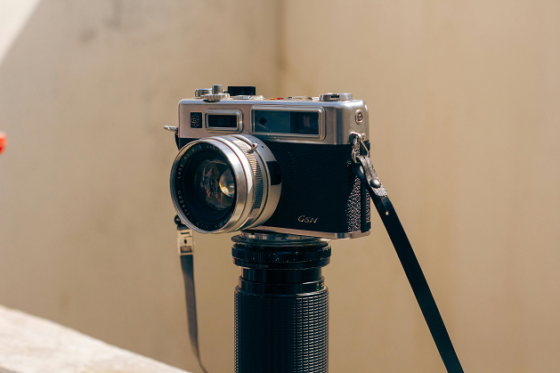

Camera Lens
A film camera lens focuses light onto the film strip to create a
clear image. It controls the amount of light entering the camera
through the aperture. The lens also affects depth of field and how
much of the scene is captured, depending on its focal length. In
film photography, the quality and type of lens greatly influence the
final look of the photo.
F-Stop & ISO

F-stop refers to the aperture setting on a film camera lens, which
controls how much light enters the camera. A lower f-stop (like
f/2.8) means a wider aperture, letting in more light and creating a
shallow depth of field. A higher f-stop (like f/16) lets in less
light and brings more of the scene into focus. F-stop settings help
photographers balance exposure and control the artistic look of
their photos.
ISO in film photography refers to the film's sensitivity to light. A
lower ISO number (like 100) means the film is less sensitive and
best for bright conditions, producing finer grain. A higher ISO
(like 800 or 1600) is more sensitive and useful in low light, but
results in more visible grain. Choosing the right ISO is key to
getting the right exposure and mood for a photo.
Depth of Field

Depth of field is the range of distance in a photo that appears
sharp and in focus. A low depth of field means only a small part of
the image is sharp, with the background and foreground blurred. A
high depth of field means most or all of the image is in focus—ideal
for landscapes. Depth of field is affected by the f-stop, the
distance to the subject, and the lens focal length.